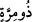

6. Ve üstün yaratılışlı (melek) asıl şekliyle doğruldu.
“Ve üstün yaratılışlı (melek) asıl şekliyle doğruldu.” “Mirra”dan murad, bir
kimsenin akıl ve görüşünün, dîninin sağlamlığıdır. Râğıb; Birisinin sağlam, bükülmüş
(kuvvetli) ip gibi güçlü olduğunun belirtilmesi için “__WORD__nın kullanıldığını söylemiştir.
Kâmus’a göre ise “mirra”, “yaradılış kuvveti ve sağlamlığı” demektir.
Bu âyet, Necm sûresinin10. âyetine kadar ta’limin keyfiyyetini beyân etmektedir. Yâni
“Cibrîl (a.s.) Allah Teâlâ’nın kendisini yarattığı gerçek melek sûretinde doğruldu”
demektir. Onun büründüğü şekil sûretinde değil hakîkî sûretinde mücevherlerle
süslenmiş altıyüz kanadı vardır. Vahiy için her inişinde ya arapların emîri Dıhyetü’l-
Kelbî şeklinde veya İbrahîm (a.s.)’e indiği gibi misâfir şeklinde yahut da Dâvûd (a.s.)’a
gelen dâvâlı iki hasım şeklinde gelmektedir. Bu nedenle Rasâlullah (s.a.) onu yaratıldığı
hakîkî sûretinde görmeyi arzu ederdi. Rasûlullah (s.a.) Mekke’nin yakınında bulunan
Nur dağındaki Hira Mağarasında bulunduğu bir esnada: “Yeryüzü beni içine alamaz en
iyisi ben göğe bakayım” derken ânîden karşısında doğu tarafından doğup dünyayı
batısına kadar örten ve ufku dolduran Cibrîl (a.s.) belirince Rasûlullah (s.a.) Mûsâ
(a.s.)’nın Tûr dağında bayıldığı gibi baygın olarak yere düştü. Daha sonra Cibrîl (a.s.)
insan şeklinde inip Nebî (a.s.)’yi kendisine çekerek kucakladı. Onun yüzünde bulunan
tozları silmeye başladı. Şüphesiz ki beden dünyada iken Tûr (dağı)ndan çıkmış olan
şeyi göremez. Meleğin yaratıldığı sûret üzere görülmemesi husûsu da bu nedendendir.
Bundan daha bir büyük rûyet olan Allah Teâlâ’nın görülmesi de bu dünyada aynı
konumdadır. Bildirildiğine göre Cibrîl (a.s.)i aslî sûretiyle Peygamberimiz (a.s.)’dan
başkası görememiştir. Zira O Cibrîl’i aslî sûretinde biri yeryüzünde, Hira’da biri de -
ileride bahsi gelecek olan- Mirâc gecesinde semâdaki Sidre-i Müntehâ’da olmak üzere
iki defa görmüştür.
Rivâyet edildiğine göre, Hamza b. Abdülmuttalib (r.a.) Rasûlullah (s.a.)’e “Bana
Cebrâil’i aslî sûretinde gösterir misin?” dedi. Rasûlullah (s.a.): “Sen ona bakmaya güç
yetiremezsin” diye cevap verdi. Hamza (r.a.): “Görebilirim ey Allah’ın Rasûlü, haydi
göster” dedi. Tam oturur oturmaz Cibrîl (a.s.) Kâbe’de bulunan ve müşriklerin tavaf
esnasında elbiselerini astıkları kurumuş iri bir ağaca inince Rasûlullah (s.a.): “Ey
Hamza! Başını kaldır bak!” buyurdu. Hamza (r.a.) gözlerini kaldırıp bakınca ayakları
yeşil zeberced gibi oluverdi ve baygın bir şekilde yere düştü. Bir başka rivâyete göre
Hz. Hamza (r.a.) Cibrîl’i bir atın üstünde görmüş, öyle ki dünya o atın iri cüssesinin
arasında küçücük kalıyormuş. O atın yüzünde, ağlamaktan hâsıl olan uzun çukurlar
bulunuyormuş. Şâyet gemiler bu çukurlara bırakılsa orada yüzecek bir konuma
gelebilecek kapasitede genişmiş.
Rasûlullah (s.a.) Cibrîl’i dininin kemâle ermesi için bir defasında dünyada ve bir
defasında da Sidre-i müntehâ’da olmak üzere iki defa görmüştür. Onun Rasûlullah
(s.a.)’a aslî sûretinde gelmesinin sebebi, Dıhye (r.a.) sûretinde gelenin de yine, kendisi
olduğunu izhar etmek içindir. Çünkü Hz. Peygamber, Cebrâil (a.s.)’ı aslî sûretinde
gördüğü zaman tam bir ilim ve vukûfa nâil olmuş ve kendisinde onunla ilgili hiç bir